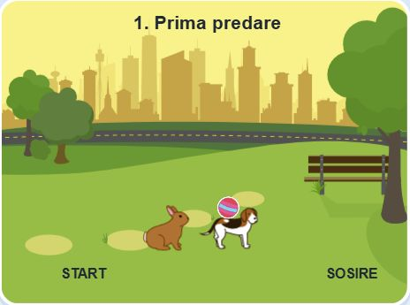

Lecția 01 · 60 de minute
Cursa cu ștafetă
A duce mingea și i-o pasează lui B. B așteaptă predarea, apoi aleargă cu mingea la sosire. Copiii programează întreaga cursă.
- 6-7 ani · nivel provocator
- Doar elemente din ScratchJr
- 10 minute pentru creația proprie
Provocarea echipei
„Echipa voastră trebuie să ducă mingea la sosire. Primul alergător o pasează colegului. Dacă următorul pleacă prea devreme, mingea rămâne în urmă! Voi programați o cursă în care fiecare știe când îi vine rândul.”
Alegem Rabbit, Dog, Ball și Park din bibliotecă. Mingea este mereu vizibilă și are propriile programe. În puzzle-ul dificil adăugăm Fence.

Trei misiuni, aceeași cursă
- Prima predare: A și mingea merg 4 pași; mingea continuă singură încă 2 până la B.
- Cursa completă: după predare, mingea trimite portocaliu. B și mingea merg împreună 6 pași. La sosire, albastrul pornește sărbătorirea lui A.
- Ocolim gardul · dificil: B și mingea ocolesc obstacolul cu aceleași trei mișcări și ajung la sosire. Copiii trebuie să adapteze două programe.
Traseul echipei mele: 10 minute pentru un ocol inventat de copil, cu o explicație și o probă.
Două rezerve: mutăm locul de schimb (+5 min); construim o ștafetă cu trei alergători și două pase vizibile (+10 min).
Lecția 1 ocupă paginile 1-13 din PDF: planul concis, pregătirea, apoi programele complete ale fiecărui personaj pentru toate misiunile, exemplul de creație și ambele rezerve. Capturile sunt realizate în editorul ScratchJr.
Ghidul profesorului · 60 de minute
Copiii pornesc dintr-un proiect nou în aplicație. Demonstrezi o etapă, apoi îi lași să construiască și să verifice. Nu trebuie copiate fișiere pe tablete.
Pregătire: A și B pe aceeași linie, la 7 pași distanță. Mingea cu 1 pas la dreapta și 1 în sus față de A. Sosirea este la 6 pași de B. Micșorează alergătorii la aproximativ 2-3 pătrățele și mingea la un pătrățel; păstrează viteza normală.
- 0-7 min · Povestea și pregătirea
Echipa trebuie să ducă mingea la sosire, cu o pasă între alergători. Construim scena din bibliotecă. Copiii arată cine aleargă, cine așteaptă și unde se face schimbul.
- 7-19 min · 1. Prima predare
A și mingea merg 4 pași împreună. A se oprește; mingea continuă încă 2 pași până la B. B așteaptă. Copiii construiesc cele două programe și urmăresc pasa.
- 19-32 min · 2. Cursa completă
Mingea trimite portocaliu după pasă. B și mingea parcurg împreună încă 6 pași. La sosire, mingea trimite albastru; A sare și se aude Pop.
- 32-35 min · Pauză activă
Trei copii joacă rolurile A, B și minge. B poate porni doar după predare. Clasa spune când trebuie trimis fiecare semnal.
- 35-47 min · 3. Ocolim gardul | dificil
Punem un gard între B și sosire. Cu exact 3 săgeți, B și mingea îl ocolesc pe sus și termină pe linia inițială. Aceleași direcții, numere și ordine în ambele programe. Fără Așteaptă sau Acasă.
- 47-57 min · Traseul echipei mele
Copilul schimbă ocolul ori poziția gardului și adaptează ambele programe. Păstrează predarea vizibilă și sosirea împreună. Explică o alegere și testează.
- 57-60 min · Verificare și salvare
Reset Characters, o cursă completă, apoi resetare și salvare în galerie. Redeschidem proiectul. Copilul arată cine trimite semnalul de predare.
Soluția de bază și indiciile
- A: Steag > Dreapta 4. Separat: Primește albastru > Sari 2 > Pop.
- Minge: Steag > Dreapta 4 > Dreapta 2 > Trimite portocaliu. Separat: Primește portocaliu > traseul lui B > Trimite albastru.
- B: Primește portocaliu > Dreapta 6 (M2). În M3, traseul pentru B și Minge: Sus 3 > Dreapta 6 > Jos 3.
Portocaliul pornește simultan B și al doilea program al mingii. Mingea primește și propriul mesaj. În R2, verdele pornește C și al treilea program al mingii.
Indiciile pentru gard: pe unde poate trece B; ce trebuie schimbat și la minge; cum revine fiecare pe linia cursei. Gardul nu oprește automat personajele: verificați vizual traseul.
Înainte de fiecare probă: Stop, dacă programul rulează, apoi Reset Characters. La final resetează, salvează în galerie și redeschide. Sari 2 controlează înălțimea unei sărituri.
Scena de la zero · opțional pentru profesor · Cele patru etape · SJR · Cele două rezerve · SJR
Editor comunitar în browser · Ce am verificat în browser · Instrucțiuni și materiale
Arhivă · materialele lecției anterioare de 50 de minute
„Ne întâlnim la joacă” este o versiune anterioară. Materialele de mai jos nu sunt soluțiile ștafetei.